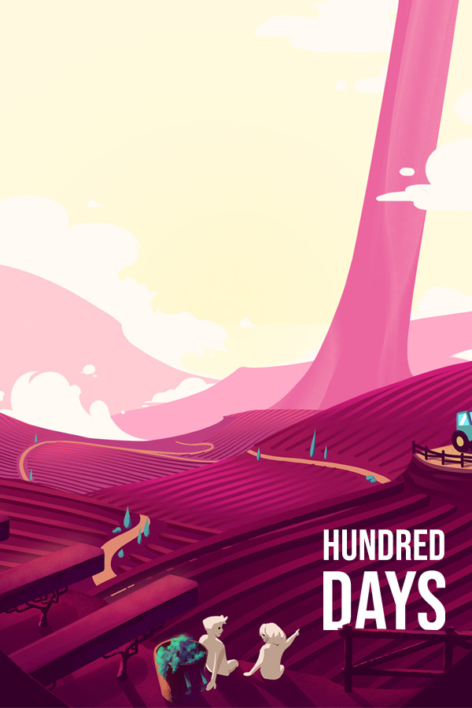

Hundred Days
Hundred Days
Details
|  | |
| Playtime | Not Played |
| Last Activity | Never |
| Added | 9/29/2023 12:30:30 |
| Modified | 7/3/2025 9:58:56 |
| Completion Status | Not Played |
| Library | Amazon Games |
| Source | Amazon |
| Platform | Amazon Games |
| Release Date | 5/13/2021 |
| Community Score | 60 |
| Critic Score | 74 |
| User Score | |
| Genre | Indie Simulator Strategy |
| Developer | Broken Arms Games |
| Publisher | Broken Arms Games |
| Feature | Single-Player |
| Links | Steam Official GOG Epic Discord Itch YouTube iPhone iPad Twitch Android |
| Tag | Agriculture Atmospheric Board Game Building Capitalism Card Game Choices Matter Colorful Economy Farming Sim Management Nature Puzzle Relaxing Resource Management Singleplayer Strategy Time Management Trading Turn-Based |
Description

In Hundred Days you will have complete control of a new Winery. First choose which vines to grow, learn how to grow them and when to harvest. Then following the entire winemaking process deciding on the type of wine you want to produce or the market requires. You will also have to sell the wine produced to allow your company to expand.

As in reality, every choice made, from the vineyard to the sales, will be able to influence the wine produced both in quantity and quality . A quality wine will increase the reputation of your company worldwide, it may have come at a higher price and will allow you to grow better and faster.

- Simulative and realistic approach suitable for both beginners and more experienced players
- The ability to cultivate different types of vine
- Analyze the soil and choose the grape variety that best suits those characteristics
- Organize work in the vineyard such as pruning or chipping
- Protect your vines through specific treatments depending on the type of disease
- Check the state of ripeness of the grapes and decide when to harvest
- Follow the winemaking processes and enhance the characteristics of your wine
- Select the yeasts and bacteria used during fermentation
- Decide how and which of your wines age with aging
- Customize your bottles by choosing their shape, color and other aesthetic characteristics
- Create your sales network and adapt the characteristics of your product to the type of customer
- Manage marketing and social activities to increase the reputation of your company